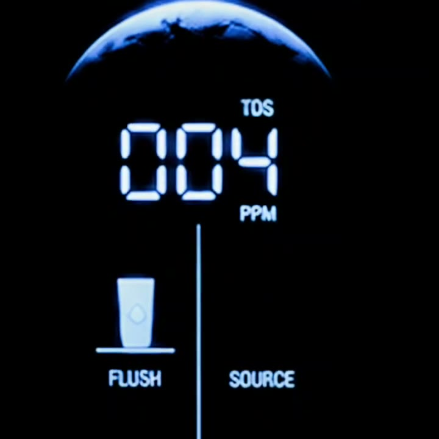
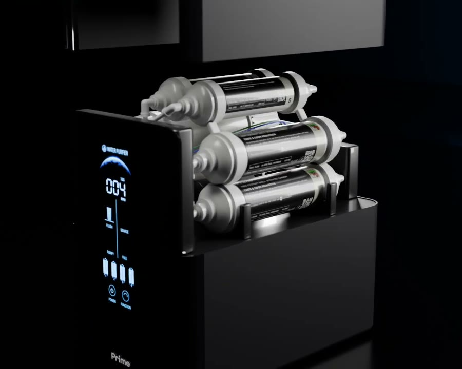
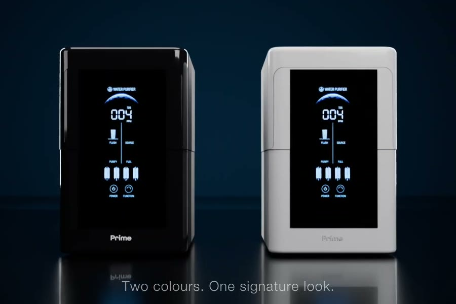

E re në Shqipëri · Ravent Prime
Ujë i pastër.
Kontroll në një ekran.
Ravent Prime e filtron ujin e rubinetit me osmozë të kundërt në 6 faza, i kthen kalciumin dhe magnezin, dhe ju tregon në ekran cilësinë e ujit dhe gjendjen e filtrave.
- Instalimi përfshihet
- 1 vit garanci
- Në të gjithë Shqipërinë
Nga brenda
Hapeni Ravent Prime
Kompakt nga jashtë
Një kuti e vetme me ekran dixhital. Zë pak vend në kuzhinë.
Gjashtë filtra brenda
Çdo fazë ka filtrin e vet, të renditur me radhë nga uji i rrjetit te gota.
Pompë e qetë
E mban filtrimin në punë edhe kur uji i rrjetit vjen me presion të ulët.
Gati për t'u instaluar
Ekipi ynë e vendos te ju. Instalimi përfshihet në 800 €.

Ekran dixhital
Shihni sa i pastër është uji që pini
Ekrani mat TDS-in në kohë reale: sasinë e kripërave të tretura në ujë, në ppm. Sa më i ulët numri, aq më i pastër uji.
- TDS në kohë reale. Cilësia e ujit, gjithmonë para syve.
- Gjendja e filtrave. Shihni sa jetë i ka mbetur secilit filtër.
- Njoftim për ndërrimin. Pajisja ju thotë vetë kur vjen koha.
Osmozë e kundërt
Gjashtë faza, nga rrjeti te gota
Uji kalon me radhë nëpër gjashtë filtra. Membrana e osmozës së kundërt ndal kripërat e tretura, dhe faza e fundit i kthen ujit mineralet që i duhen.
- 01
Sediment
5 mikronKap rërën, ndryshkun dhe grimcat.
- 02
Karbon aktiv
Kokos · NSFHeq klorin, shijen dhe aromën e pakëndshme.
- 03
Bllok karboni
Kokos · NSFFiltrim i dytë me karbon, për shije më të pastër.
- 04
Membrana PALLAS™
Osmozë e kundërt · 80 GPDRedukton kripërat e tretura. Deri në rreth 300 litra ujë në ditë.
- 05
Karbon përfundimtar
Post-karbonLustrimi i fundit i shijes, para rubinetit.
- 06
Balance+
Minerale · pHShton kalcium dhe magnez dhe balancon pH-in.
Mbrojtje nga rrjedhjet
Nëse ka rrjedhje, sistemi e zbulon dhe ju paralajmëron.
Pompë e qetë
Punon pa zhurmë, edhe kur presioni i ujit është i ulët (brenda kufijve të pajisjes).
Depozitë metalike
2.2 galonë, rreth 8 litra ujë të filtruar gati për t'u përdorur.
Rubinet inox
Rubinet i veçantë prej çeliku inox për ujin e filtruar.
Dizajn kompakt
Zë pak vend në kuzhinë dhe duket mirë në çdo ambient.
Instalim nga ne
Ekipi ynë vjen në shtëpi dhe e instalon. Përfshihet në çmim.
Brenda kutisë
Filtrat ndërrohen lehtë
Të gjashtë filtrat janë brenda një trupi të vetëm, të renditur me radhë. Kur ekrani ju njofton, filtri ndërrohet pa e çmontuar pajisjen.


Dy ngjyra
E zezë apo e bardhë
Na tregoni në WhatsApp cilën ngjyrë dëshironi.
Video
Shikojeni nga afër
Ofertë prezantimi
Ravent Prime te shtëpia juaj, i instaluar
- Instalimi përfshihet në çmim
- 1 vit garanci
- Vijmë në të gjithë Shqipërinë
- Na shkruani çdo ditë, 9:00–21:00
Pyetje të shpeshta
Ajo që na pyesin më shpesh
Çmimi është në euro apo në lekë?
Në euro: 800 € në ofertë, nga 1.000 € çmimi i zakonshëm.
A paguaj veç për instalimin?
Jo. Instalimi përfshihet në 800 €.
Sa kohë është garancia?
Një vit garanci.
Në cilat qytete e instaloni?
Në të gjithë Shqipërinë. Na shkruani qytetin në WhatsApp dhe caktojmë ditën.
Si e di kur duhen ndërruar filtrat?
Ekrani tregon gjendjen e secilit filtër dhe ju njofton vetë kur vjen koha e ndërrimit.
Po nëse ka rrjedhje?
Ravent Prime ka mbrojtje nga rrjedhjet: e zbulon rrjedhjen dhe ju paralajmëron.
Kam tashmë një filtër. Çfarë ndryshon?
Ravent Prime ka 6 faza, membranë PALLAS™, Balance+ që i kthen ujit kalciumin dhe magnezin, ekran dixhital me TDS dhe mbrojtje nga rrjedhjet.
A punon me presion të ulët uji?
Po. Pompa e brendshme e ndihmon të punojë edhe me presion të ulët, brenda kufijve të pajisjes.